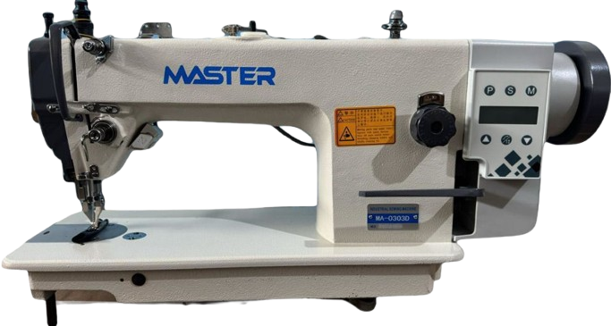
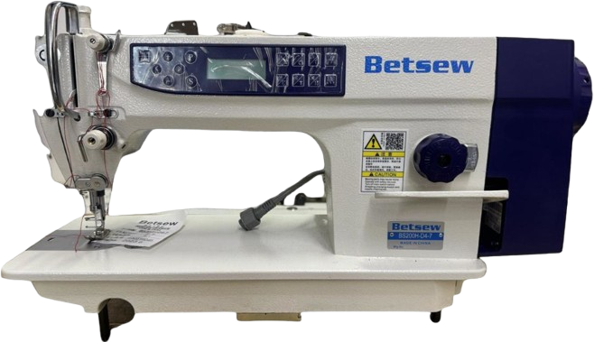
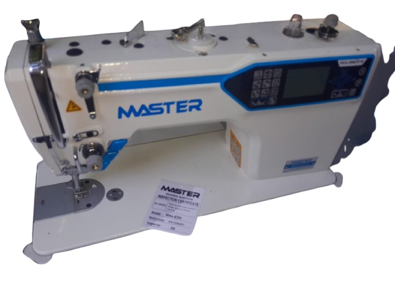
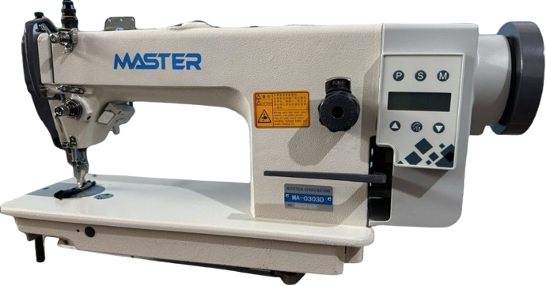
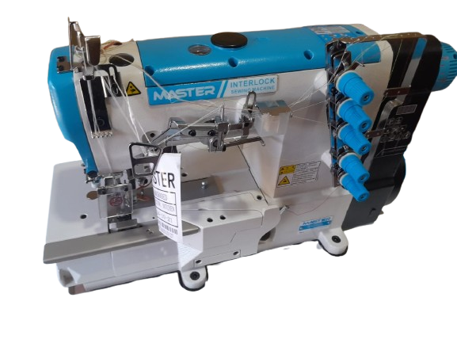
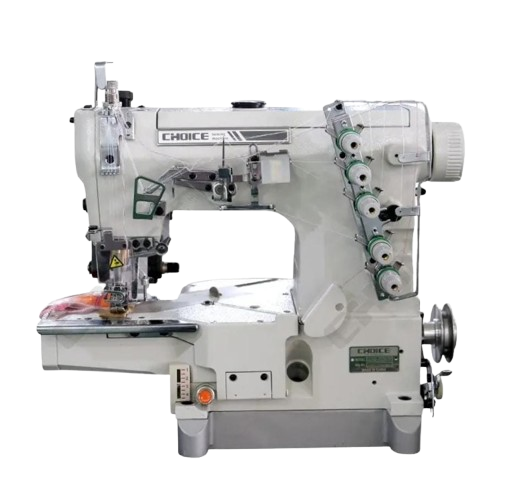
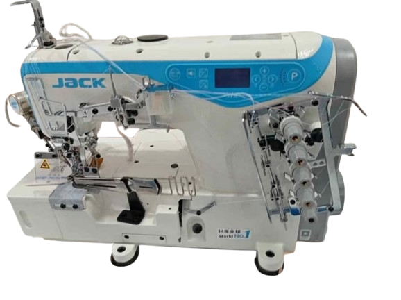
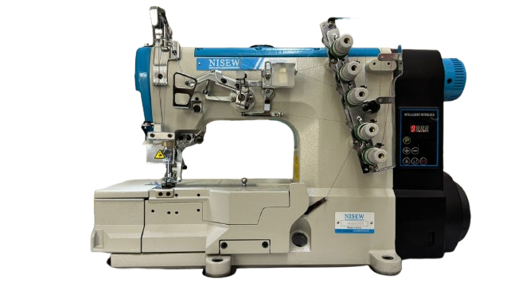

tenemos a nuestra disposición una amplia variedad de maquinas para satisfacer todas sus necesidades.
rectas
contamos con maquinas de coser rectas de alta calidad, diseñadas para ofrecer un rendimiento excepcional y resultados profesionales. Nuestras maquinas de coser rectas son ideales para una amplia gama de proyectos de costura, desde prendas
de vestir hasta artículos para el hogar. Con características avanzadas y una construcción robusta,
nuestras maquinas de coser rectas garantizan durabilidad y facilidad de uso, permitiéndote crear con confianza
y precisión.




collareta
nuestras maquinas de coser collareta son la elección perfecta para aquellos que buscan versatilidad y funcionalidad en sus proyectos de costura.
Con características avanzadas y un diseño innovador, nuestras maquinas de coser collareta te permiten crear una amplia variedad de prendas y artículos con facilidad.
Ya sea que estés confeccionando ropa, accesorios o artículos para el hogar, nuestras maquinas de coser collareta te brindan la confianza y el rendimiento que necesitas para llevar tus proyectos al siguiente nivel.




overlock
nuestras maquinas de coser overlock son la elección perfecta para aquellos que buscan un acabado profesional y duradero en sus proyectos de costura.
Con características avanzadas y un diseño innovador, nuestras maquinas de coser overlock te permiten crear costuras fuertes y resistentes, ideales para prendas de vestir, accesorios y artículos para el hogar.
Ya sea que estés confeccionando ropa, accesorios o artículos para el hogar, nuestras maquinas de coser overlock te brindan la confianza y el rendimiento que necesitas para llevar tus proyectos al siguiente nivel.
familiares
nuestras maquinas de coser familiares son la elección perfecta para aquellos que buscan una combinación de funcionalidad, facilidad de uso y versatilidad en sus proyectos de costura.
Con características avanzadas y un diseño intuitivo, nuestras maquinas de coser familiares te permiten crear una amplia variedad de prendas y artículos con facilidad. Ya sea que estés confeccionando ropa, accesorios o artículos para el hogar, nuestras maquinas de coser familiares te brindan la confianza y el rendimiento que necesitas para llevar tus proyectos al siguiente nivel.
.png)